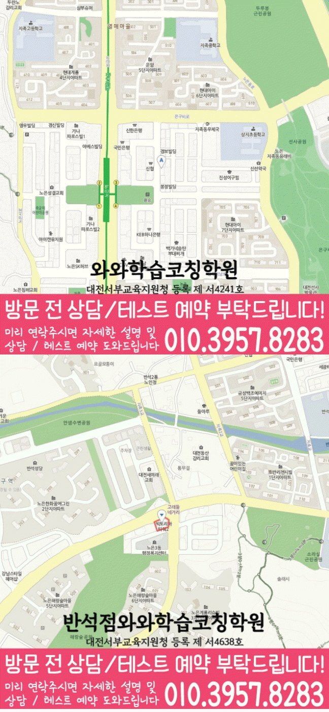

High school Korean · English · Math
노은동 고등학생 국영수학원
노은동 고등학생 국영수학원 선택 전 고등 내신 자료, 최근 오답과 과목별 가능 학년, 센터 위치·비용 확인 기준을 안내합니다.
01 Quick answer
노은동에서 먼저 확인할 내용
노은동에서 고등학생 국영수학원을 찾는다면 와와학습코칭센터 지족점의 과목별 가능 학년을 먼저 확인하세요. 제공된 고등학교 참고 자료와 학생의 실제 교재를 대조하고, 학생의 실제 풀이 기록에 맞게 과목별로 무엇을 먼저 보완할지 정하는 순서가 필요합니다.
대표 학생 상황
과목별 시험 일정은 알고 있지만 복습 우선순위를 정하기 어려운 고등학생


010-6839-8283010-6839-8283상담 전 핵심 안내
대전광역시 유성구 노은동에서 고등학생 국영수 관리를 고민한다면, 첫 상담에서 학생의 시험지와 학습 루틴을 함께 보는지부터 확인하는 편이 좋습니다. 비슷한 학습 문제를 노은동 상담에서 어떻게 나눌지 살펴봅니다. 최근 학습 기록을 바탕으로 노은동 학생의 국어·영어·수학 병목을 따로 살펴봅니다. 또한 제공된 학교 정보와 주소, 과목별 완료 기록처럼 상담에서 확인할 자료를 함께 살펴 상담 전에 확인할 질문을 정리합니다.
노은동에서 고등학생 국영수학원을 볼 때 핵심 질문
지역 상담에서 먼저 확인되는 고민은 “노은동 고등학생 국영수학원에서 우리 아이가 세 과목을 모두 따라갈 수 있을까”라는 점입니다. 대전광역시 유성구 노은동 기준으로는 고등 국영수를 한꺼번에 늘리는 계획보다는 실제 공부 시간과 과목별 마감 일정을 먼저 비교해야 합니다. 고등학생이 완료하지 못한 과제와 다시 틀린 문제를 나누어 다음 점검 순서를 잡아야 합니다. 노은동 상담 전에는 최근 범위와 틀린 유형, 과제 완료 시간을 준비해 세 과목의 우선순위를 나눠 보세요. 많은 목표를 약속하기보다 노은동 학생이 다음 수업까지 반복할 작은 행동을 먼저 정해야 합니다.
노은동 학생의 학교 자료를 확인하는 순서
실제 학습 범위를 확인하면, 노은동 고등학교 참고 정보에는 반석고·지족고·노은고·유성여고가 포함됩니다. 학교 자료를 대조할 때, 학교명만으로 수업 가능 여부를 판단하지 않고 센터의 현재 개설 범위를 함께 확인해야 합니다.
학생 자료를 먼저 펼쳐 보면, 학교 자료는 이름 나열보다 활용 방식이 중요합니다. 상담 전에 정리해 보면, 노은동 고등학생의 시험 범위표·학교 프린트·수행평가 일정 자료에서 과목별 범위와 어려운 문제를 표시해 상담 계획과 대조하는 편이 좋습니다.
고등 국어·영어·수학 관리 기준 내신 시험 전후 관리
노은동 고등학생 학습 점검에서 내신 대비는 시험 기간에만 갑자기 시작되는 과정이 아닙니다. 노은동에서 이와 비슷한 상황의 학생에게는 수행평가가 겹치면 지필 대비 시간이 줄어들 수 있으므로 주간 계획에서 과목별 최소 학습량을 따로 잡아야 합니다. 대전광역시 유성구 노은동 고등학생이 국어·영어·수학을 함께 관리하려면 고등학생 내신은 하루 집중보다 누적 관리가 더 큰 영향을 주므로, 평소 과제와 시험 대비를 분리하지 않는 편이 좋습니다. 고등 국어·영어·수학 관리 기준에서 내신 대비는 새 문제를 많이 푸는 것보다 학교 수업 내용과 오답 기록을 다시 연결하는 과정이 중요합니다.
고등 국어·영어·수학 관리 기준 과목별 수업 구성
세 과목의 분량을 같게 나누기보다 현재 단원과 시험 일정에 따라 우선순위를 정해야 합니다. 노은동 고등학생의 수학 계획에는 조건 해석에서 계산 확인까지 학생이 멈춘 단계를 따로 표시합니다. 대전광역시 유성구 노은동에서 읽기에서 흔들리는 학생은 답의 근거가 된 문장을 표시하고 설명해야 합니다. 노은동 고등학생 세 과목 학습 상담에서 영어 계획을 세울 때는 단어 암기량만 늘리기보다 문장 구조와 해석 순서를 함께 확인합니다. 문법 문제와 독해를 따로 보지 말고 문장 구조를 읽는 과정에서 적용 여부를 확인하세요. 노은동 상담에서는 세 과목을 모두 다룬다는 설명보다 과목별 피드백이 실제 계획에 반영되는지 물어보세요. 대전광역시 유성구 노은동 고등학생은 한 과목의 과제가 다른 과목 복습 시간을 잠식하지 않도록 주간 분량을 나누어야 합니다.
노은동 고등학생 세 과목 학습 상담 위치와 수업 리듬
노은동 생활권에서 고등학생 학습 점검을 선택할 때는 수업 내용과 함께 지속 가능성을 살펴야 합니다. 대전광역시 유성구 노은동 학부모님이 체감하는 현실은 고등학생은 수업 시간이 늦어질수록 복습 시간이 줄어들 수 있으므로 등하원 계획이 학습 계획의 일부가 됩니다. 상담 장소의 전체 주소는 대전 유성구 지족동 910-7번지 401입니다. 고등학생의 경우 학생의 학교 일정과 이동 동선도 함께 점검해야 합니다. 노은동 고등학생 학습 점검에서 과목별 완료 기록을 묻는 이유도 결국 평일 저녁에 여러 과목을 따로 이동하면 집중력이 흩어질 수 있어 동선과 수업 밀도를 함께 봐야 합니다.
노은동 국어·영어·수학 학습 계획 등록 전 비교 포인트
고등 국어·영어·수학 관리 기준 상담 전 확인 기준은 학생의 최근 교재와 오답에서 출발해야 합니다. 노은동 수업에서 국어·영어·수학을 함께 관리하더라도 과목별 피드백이 따로 기록되는지 살펴보는 편이 좋습니다. 노은동 학부모님이 과목별 완료 기록을 함께 확인한다면 노은동 학생의 진단 결과가 레벨명으로 끝나지 않고 교재, 과제량과 보충 방향으로 이어지는지 살펴봐야 합니다. 고등학생의 경우 학교에서 수업 장소까지 이동한 뒤 귀가하는 데 필요한 시간을 주간표에 반영하세요. 노은동 고등학생의 국어·영어·수학 학습 점검을 비교한다면 최근 교재와 오답을 기준으로 수업 흐름을 살펴보세요. 상담 질문은 ‘몇 점까지 오르나요’보다 ‘노은동 학생은 어떤 단원부터 다시 확인해야 하나요’에 가까울수록 구체적인 답을 얻기 쉽습니다.
02 Consultation examples
노은동 학부모 상담 상황 예시
아래 내용은 실제 고객 후기나 성적 결과가 아니라, 상담에서 확인할 질문을 이해하기 위한 상황 예시입니다.
노은동 고등학생의 상담을 가정한 예시입니다. 국어·영어·수학 점수만 비교하지 않고 시작이 늦어진 과제, 반복한 오답과 학교 일정을 나누어 본 뒤 이번 주에 실행할 한두 가지를 정리합니다.
노은동에서 제공된 고등학교 참고 정보인 반석고·지족고·노은고 등의 목록과 학생의 실제 학교 자료를 대조해 질문하는 경우입니다. 학부모는 교습비와 시간표뿐 아니라 과목별 진단 근거, 보완 순서와 일정 시간이 지난 뒤 재확인하는 방법까지 질문합니다.
03 FAQ
노은동 고등학생 국영수학원 자주 묻는 질문
학부모님이 상담 전에 자주 확인하는 내용을 질문과 답변으로 정리했습니다.
노은동 고등학생 국영수학원이 필요한지 어떤 기록으로 판단하나요?
국어·영어·수학의 공부 시간은 많지만 완료 기준이 불분명하다면 과목별 기록과 학교 일정을 대조하세요. 노은동 센터의 수업 가능 학년도 별도로 확인해야 합니다.
노은동 고등학생의 국영수 오답은 같은 방식으로 관리하나요?
노은동 상담에서는 국어는 지문과 선택지의 근거, 영어는 문장 구조와 해석 순서, 수학은 개념을 식으로 옮기는 과정을 따로 확인해야 합니다. 이후 시험 일정과 복습 시간을 보고 세 과목의 주간 분량을 조정합니다.
노은동 고등학교 참고 정보는 상담에서 어떻게 활용하나요?
제공 목록에서 반석고·지족고·노은고·유성여고 등을 확인할 수 있지만 모든 학교의 수업 가능 여부를 뜻하지는 않습니다. 실제 범위와 과제 자료를 준비해 상담에서 확인하는 편이 정확합니다.
노은동 학부모가 센터 운영 정보를 확인할 순서는 무엇인가요?
센터별 교습비 확인 버튼에서 제공 자료를 볼 수 있습니다. 실제 방문 위치는 위 센터 확인 정보에서 확인할 수 있습니다. 노은동 학생에게 맞는 시간표가 있는지와 고등학생 수업 범위는 희망 센터의 현재 안내를 기준으로 판단합니다.
04 Continue
노은동 페이지 이동
카테고리 전체 지역 또는 앞뒤 지역 안내로 이동할 수 있습니다.